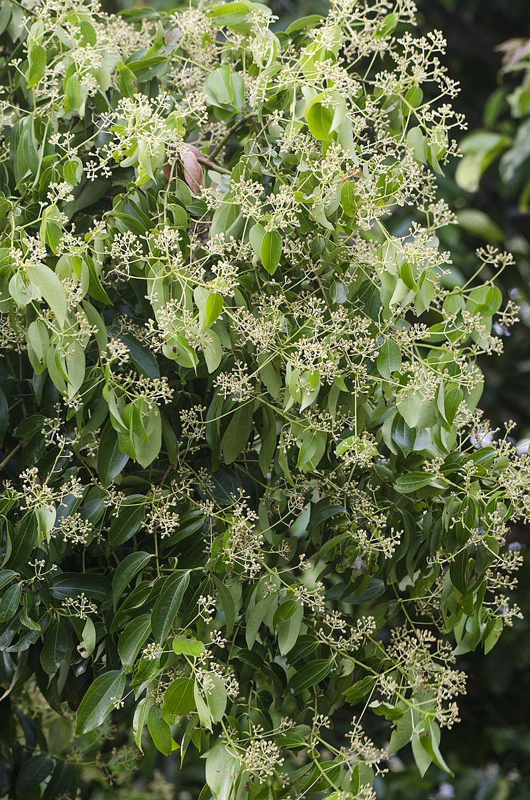
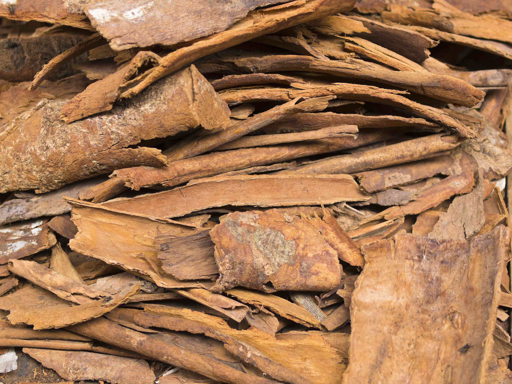
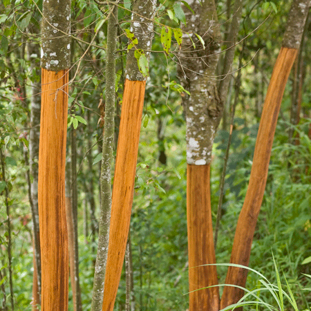
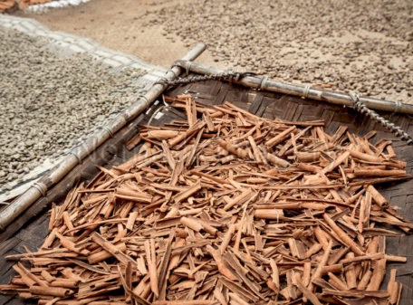

Filler
CINNAMON
Most cinnamon (Ceylon cinnamon) comes from trees called Cinnamomum verum that grow in Sri Lanka. The rest comes from China, Vietnam and Burma. In the jungle, workers use score, beat the branch consistently to loosen the inner bark, then peel it into long rolls. Only the inner bark is used and is left to dry completely for four to six hours, leaving it to naturally curl. After this process, sticks are cut into smaller pieces to be packaged. Larger pieces are used to be grounded into cinnamon spice.




